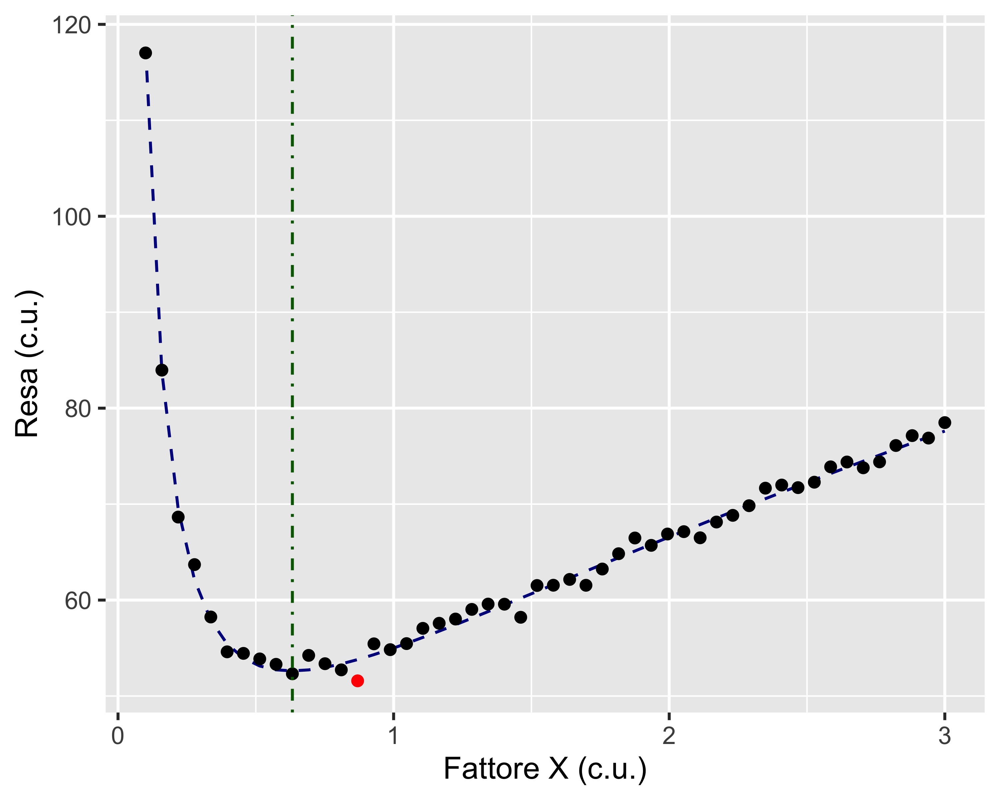
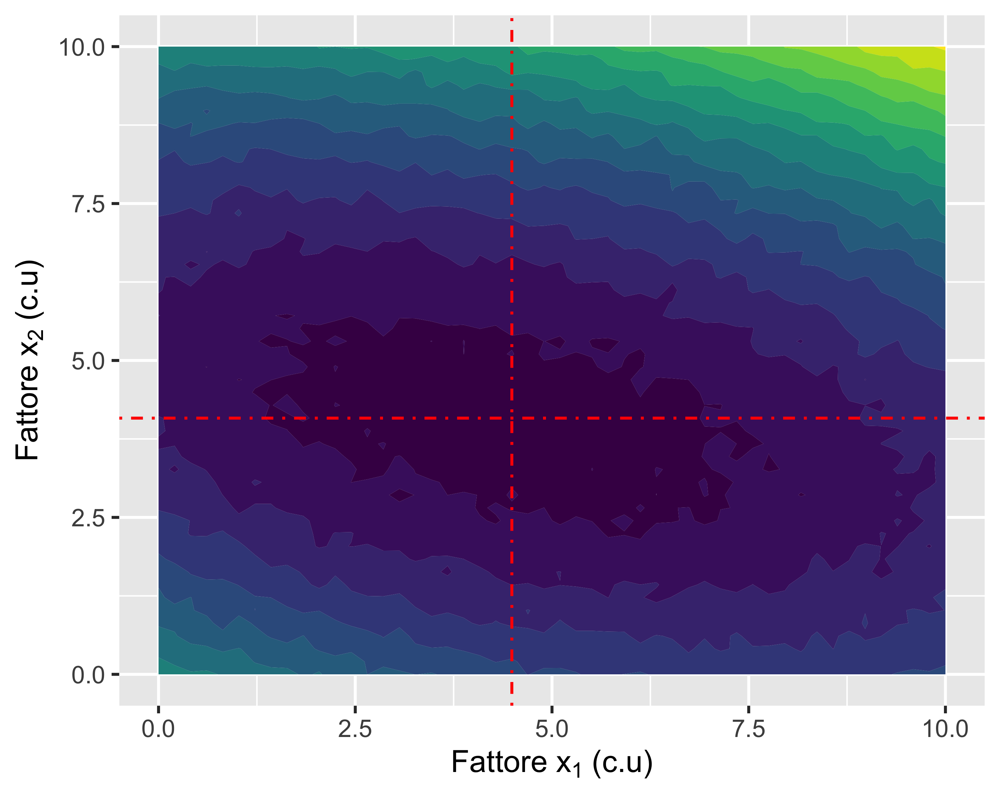
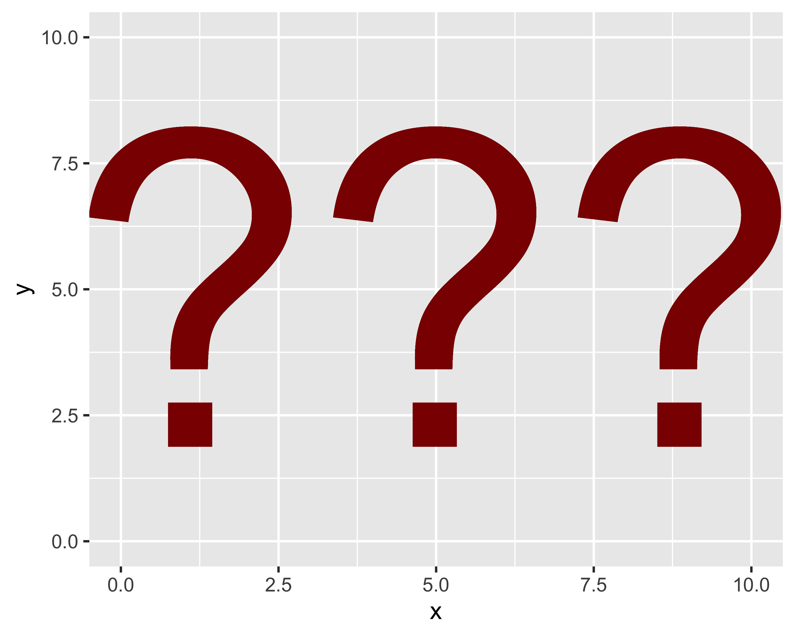

Ottimizzazione dei parametri di un processo manifatturiero
Introduzione al corso
Paolo Bosetti
Università di Trento, Dipartimento di Ingegneria Industriale
03 novembre 2025
Contenuti del corso
- Ottimizzazione: cosa significa?
- Metodi analitici
- Metodi numerici
- Metodi sperimentali
Ottimizzazione
… non significa solo miglioramento!
P-Diagram
Ogni processo può essere considerato come un oggetto, più o meno opaco, che opera una trasformazione:
- \(A, \dots, G\) sono dei fattori in ingresso
- \(N\) è il rumore
- \(Y\) è la resa
Dal punto di vista matematico, il processo è un campo scalare \(\mathbb{R}^n \rightarrow \mathbb{R}\), del tipo \(y = f(x_1, x_2, \dots, x_n) + y_N\)
La resa del processo \(y\) è cioè descritta da una superficie (\(n+1\))-dimensionale affetta da un disturbo aleatorio \(y_N\)
Ottimizzazione
Ottimizzare significa trovare la combinazione \(x_1, x_2, \dots, x_n\) che rende ottima la resa \(y\)
Se la resa è una caratteristica positiva (ad esempio pezzi/ora), \(y\) va massimizzata
Se la resa è una caratteristica negativa (ad esempio rugosità), \(y\) va minimizzata
Quindi ottimizzare ha un preciso significato matematico:
- non significa semplicemente migliorare
- significa trovare un punto di minimo|massimo della funzione di risposta del sistema
- l’ottimo può essere locale
- dato il contributo di \(y_N\) il problema ha un certo grado di aleatorietà o incertezza
Esempio 1-D
- Se la resa del processo \(y\) dipende da un unico fattore \(x\), si tratta di trovare il minimo di \(f(x)\)
- Se la relazione teorica \(y=f(x)\) è nota ed analitica, il problema è banale
- Se la relazione è empirica, è necessario passare per un modello empirico, cioè compiere una regressione
Nota
in realtà, anche se la relazione analitica è nota, rimangono da identificare i parametri!

Esempio 2-D
- Se la resa del processo \(y\) dipende da due fattori \(x_1, x_2\), si tratta di trovare il minimo del campo \(f(x_1, x_2)\)
- Se la relazione teorica \(y=f(x_1, x_2)\) è nota ed analitica, il problema è abbastanza banale
- Se la relazione è empirica, è necessario passare per un modello empirico, cioè compiere una regressione di un modello bivariato

Esempio N-D
- Quando il numero di fattori diventa grande, visualizzare il campo che descrive la resa è impossibile
- Si possono studiare gli effetti dei fattori uno alla volta, ma così facendo si perdono le interazioni
- In ogni caso, non tutti i fattori hanno un effetto significativo, quindi è opportuno classificarli per importanza

E quindi?
Quindi ottimizzare un processo richiede queste competenze:
- conoscenza della fisica e della tecnica del processo
- conoscenza di tecniche di modellazione analitica (calcolo numerico)
- conoscenza di tecniche di modellazione numerica (elementi finiti)
- conoscenza di tecniche di analisi statistica (per tenere conto del rumore)
- conoscenza di tecniche di pianificazione degli esperimenti